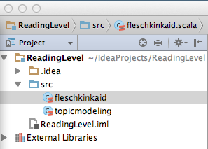

Members
The members of this group are mjzhu, bp12, eh49, and amai.
What We Did This Week
Solr
We are still in the process of uploading all the files to Solr. Fortunately, I wrote a script that automates most of the process so we can upload stuff 24/7; unfortunately, Solr is slow and needs to read through every single line of input as well as process everything so it can index it.
The good news is, we have successfuly had our other servers use an HTTP request to query our Solr instance. This shows that all we need to do for our Spark cluster is to launch HTTP requests to get the data. We also saw that the main bottleneck of getting data out of Solr is the network speed; while Solr itself is blazingly fast, there is so much data for simple queries (i.e. all posts that contain the word "hello") that it takes a while (30 seconds) to transfer over HTTP. However, this is acceptable in light of the circumstances, as we are dealing with massive amounts of data and running Spark jobs on the fly, two things where if we used the traditional approaches as taught in class would probably take hours.
Spark
On the Spark side of things, we've actually set up an SBT project for Scala and wrote a simple Spark job that reads in a local text file and does some word counting. We are currently working on integrating the Spark job with the Solr server by modifying the word counting to count the response from the Solr server. We are using scalaj-http to make http requests to the Solr server in order to query the dataset. The response from the Solr server is in xml, but thankfully Scala has native xml parsing support so parsing the response should be easy. After we finish integrating the Spark job with Solr, we will use the already set up spark-jobserver to allow the Flask web server to make requests to start Spark jobs.
Flask
We had a bit of trouble with Flask because it is not a production-ready server, so many things being served on it is extremely slow. The solution is to run Flask with gunicorn on an nginx server, which took a while to set up since this is the first time most of us have even touched Flask. There was a very annoying bug where we tried to get gunicorn to actually run our flask app, but it turned out that the error was, for some reason, caused by naming our object "app" instead of "application". Changing that made the entire thing work, and now we have a dummy visualization set up
here. This is proof that our webapp is up and running, and we just have to fill in the server code to make the appropriate requests and serve the correct pages.
Algorithms
We have begun to look at prototypes for many of the algorithms that we will want to implement. In particular, we are currently using IntelliJ IDEA CE to build a prototype of the Flesch-Kinkaid grade level test. One trouble that we are running in to is how to accurately count the number of syllables in each reddit comment, and we are looking into using a built-in syllable dictionary through Java to count the number of syllables. Here is an example of the code we are currently working on: 